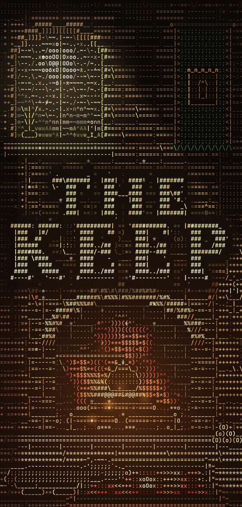
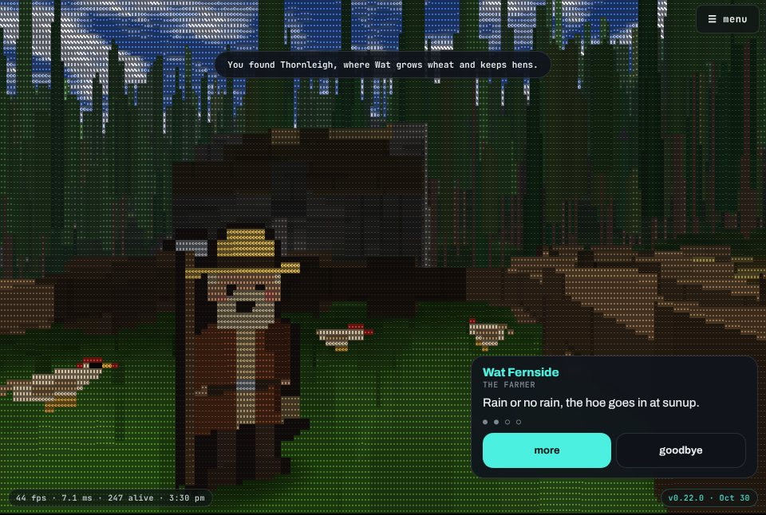
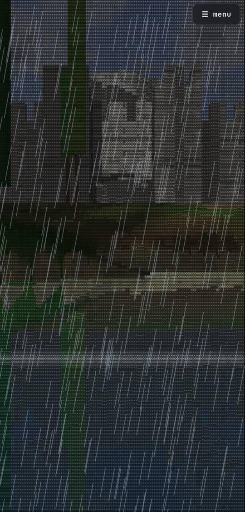
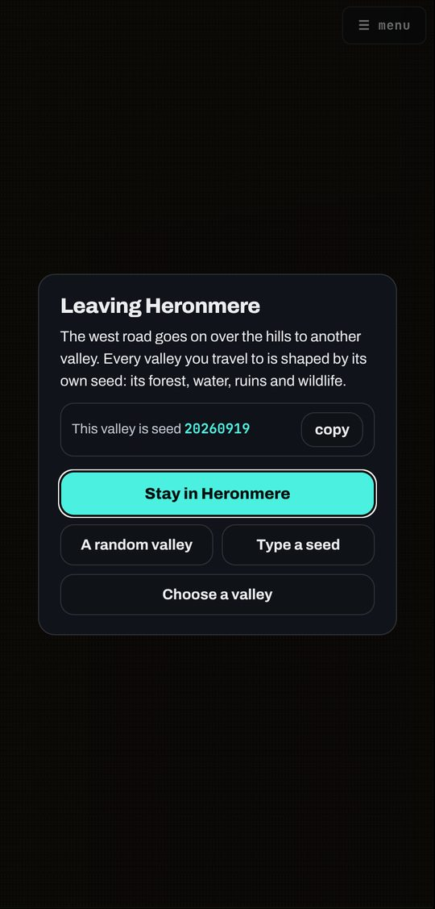
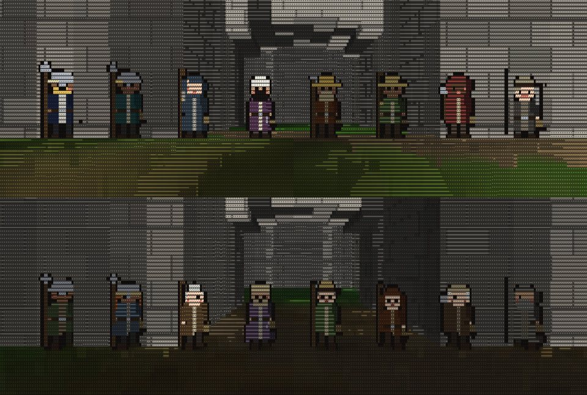
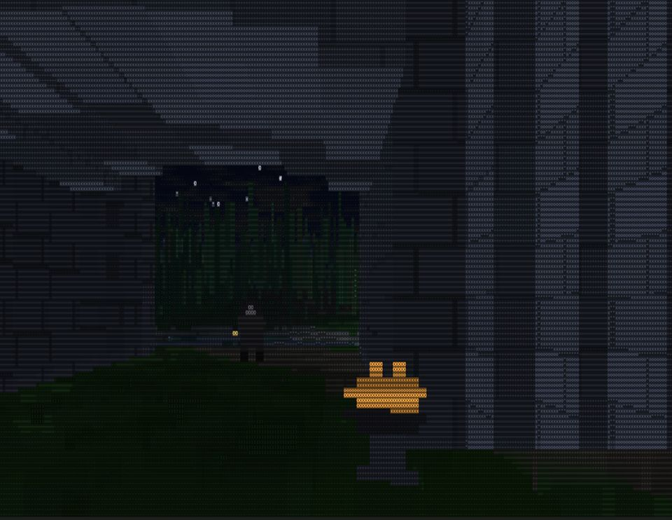
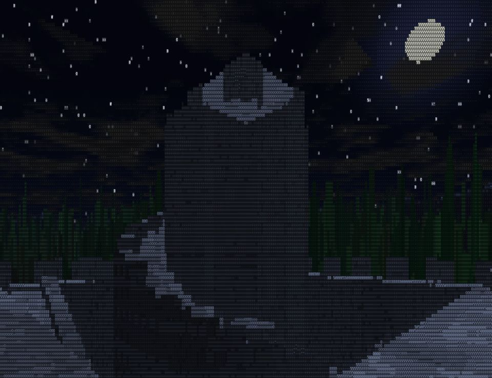

The Keep
A living valley, drawn in letters.
Who are you?
Where you grew up has plenty of
Pick any, or none. Your parents keep the keep there.
How do you want to see the world?
You can change this any time in the menu.
Walk and steer: drag on the left half. Push up to walk, tilt left or right to turn.
Look: drag the right half. (Prefer stepping sideways? Turn it off in the dials, under Controls.)
Desktop: WASD + mouse, Shift to run.
Water: wade in, look down and move to dive, look up to rise, level off to walk the bottom.
Tap ☰ menu, top right, any time for a new world, the dials, and the changelog.
A living valley, drawn in letters. Walk in, listen to the people, and leave by the road.
It began as all text. The hills, the water, the people, the keep: everything is drawn with the characters on your keyboard, @ # * = and dots. Each spot on the screen picks a character by how light it should be and tints it a color, and the whole grid is re-typed dozens of times a second. It's ASCII art you can walk around inside.
Who lives here. Every valley has its own people: guards on the wall, a gatekeeper, a steward, farmers, a shepherd, a woodcutter and a hermit down by the lake. They have names, families, friends and grudges, and they keep their own hours. Walk up to anyone and they'll talk about their work, each other, and what happened this week.
Things happen. Market days, weddings, new babies, quarrels and harvests. At night a wolf might take a hen. Storms roll in at any hour, the rain comes down and everyone heads indoors.
Roads out. Every valley has roads through the hills. Walk to the end of one and you can stay, take a random valley, choose the kind of valley you want, or type a seed. A seed always grows the same valley, with the same people, so you can find your way back.
Six ways to see it. ASCII, all letters, is the original. Pixels, Mesh, Voxels, Rays and Iso draw the same world other ways, the last four on the graphics chip. Change it any time in the menu.







The Hollow Crown. Long ago two sisters broke the Hollow Crown in half and walked away in opposite directions. Their families still keep the halves, without ever having met. Learn enough of the old lore and someone will give you half a map. In Story, one of your parents has an old friend over the hills, too.
What they call you. What you choose is remembered. Enough of one kind earns you a nickname, then a title, and not all of them are kind. Over the hills, people you have never met tell stories about you, a little wrong. And the old stones and the old folk remember the land as it was: the Ring-builders, the Hollow Kings, the Long Quarrel. Your journal keeps every piece you find.
The one who left. Somebody at the keep has a brother, sister, son or daughter who walked away years ago. In Story it is someone at your home keep. Somebody on the road has seen them. Find them, decide what to do, and go back and tell the one who asked.
Every valley has its troubles. A hen that wandered over the hills, a quarrel over a fence, a pair of sweethearts too shy to speak, a light in the old stones at night, a name cut in a stone that belongs to a family somewhere else. Every valley grows its own from its seed, and what you choose changes what people say.
Talk and choose. Walk up to anyone and they talk, or tap the Talk button when you're close. Walk off mid-conversation and it waits for you. When it matters, people ask you things, and you answer with the buttons on the chat card. The journal (top of the screen) keeps what you were asked, every valley you have been to, and takes you back to any of them.
Story or Wander. Story starts you at home: give yourself a name, say what your valley has plenty of, and wake by the gate of the keep your parents keep. Everyone there knows you. Wander drops you into any valley, as a stranger. Your story is saved on this device, and Continue picks it up where you left it.
The whole game is one HTML file, plus a file for each 3D view. Right now: ~561 KB. Smaller than a single phone photo.
Why I built it. I build things on a phone, directing AI the way I would direct a camera. I saw a clip of a tiny 3D world made of nothing but text and wanted to see if I could grow one that was actually alive, and keep growing it in the open instead of ever calling it done.
What I learned. How far you can get with almost nothing. One idea, a ray walking a height map, turned into characters, with a small world of animals living on top. Every version taught me one concrete thing: how to make a wall read as solid, how to keep the wolves from starving the world empty, how to make a forest look like real woods.
Walk: drag the left half of the screen (tilt to turn). Look: drag the right half. Wade into the water to swim. Tap ☰ menu for a new world, the dials, and the time of day. Walk under the gate arch and find the door under the tower stair.